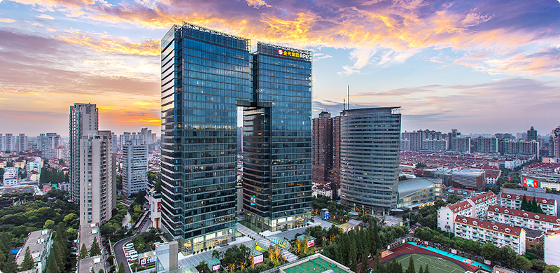
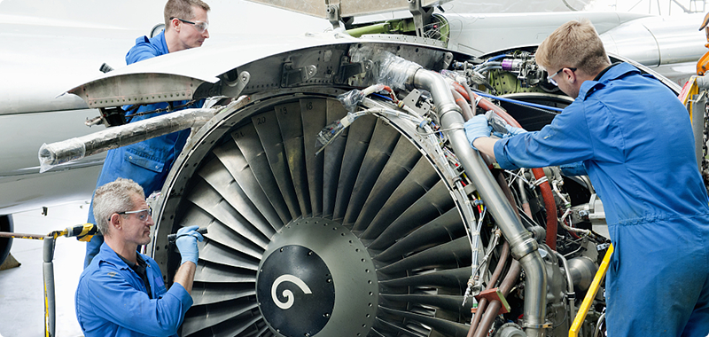
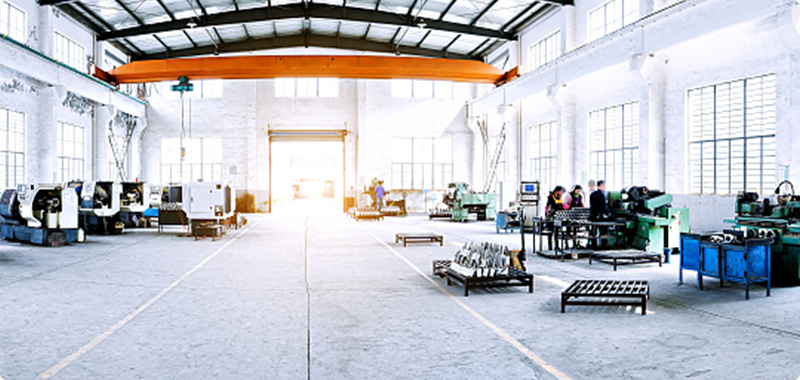
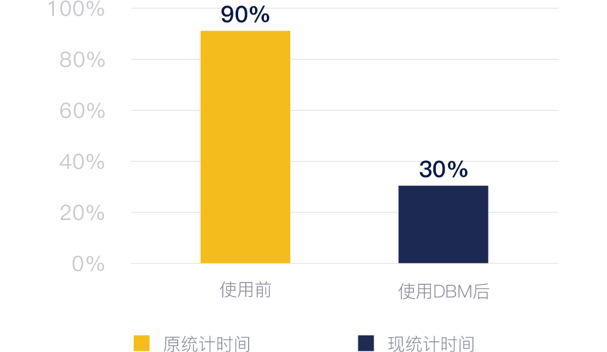
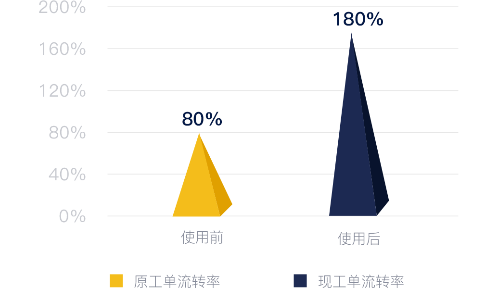
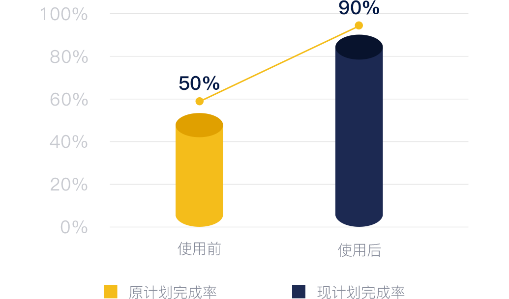
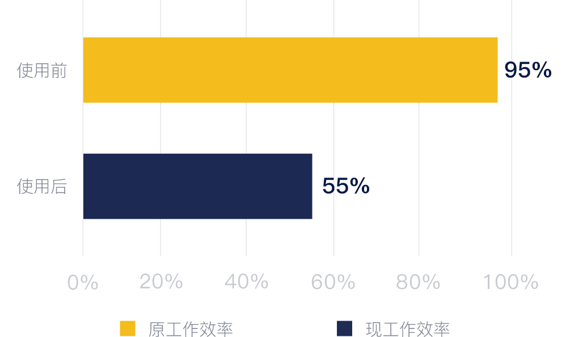

@@include('include/columns-left.html')
DBM助力提升生形象和客户满意度
——金虹桥国际中心
——金虹桥国际中心


金虹桥国际中心，地处长宁区轨道交通2号线沿线，位于虹桥商务中心的黄金地段，占地面积3．55万平方米，总建筑面积约26万平方米。由一幢148米6E超高品质写字楼、开放式Shopping Mall及市区罕有的月1400席超大地下停车库组成，是集购物、餐饮、办公、酒店、休闲等功能为一体的城市综合体。金虹桥国际中心写字楼加商场的格局，每日都有许多固定人群在建筑里，同时也有大量的流动人群，人流密集，让人带着对讲机在大楼内四处巡检不现实，同时楼内各种突发项目较多，造成设备维护成本较高，工作效率低等情况。
人流密集
维修维护要求高
设备分散不易管理
金虹桥面积大，设备分散，不易管理，突发任务较多，不能及时响应，日常维修耗时长。为了确保客户的舒适办公的要求，水泵、空调等的日常维护及保养要求极高，需要专业的物业人员，运维成本高。针对本项目案例，介谷科技制定了相应的解决办法。
升级方案
集中管理平台
针对本项目为楼宇规划智能管理系统，建立设备台账管理平台，实现对各个设备设施的统一管理，远程监控，全局掌握能耗分布，设备情况，设置故障报警，实现物业的可控化以及智能化管理。
智能工单系统
针对本项目工单管理进行升级线上软件、系统与线下服务相结合方式，将工作方式电子化，日常维护、保养维修系统化，明确任务进度，加快任务各阶段的响应速度；通过平台进行统计分析，提供决策依据，方便管理着了解项目情况，增强楼宇在市场上的竞争力，更好的提升楼宇价值。
成果展示
-

项目数据统计节省时间60%
-

任务工单流转率加快100%
-

维护保养计划完成率上升100%
-

人员工作效率提高35%